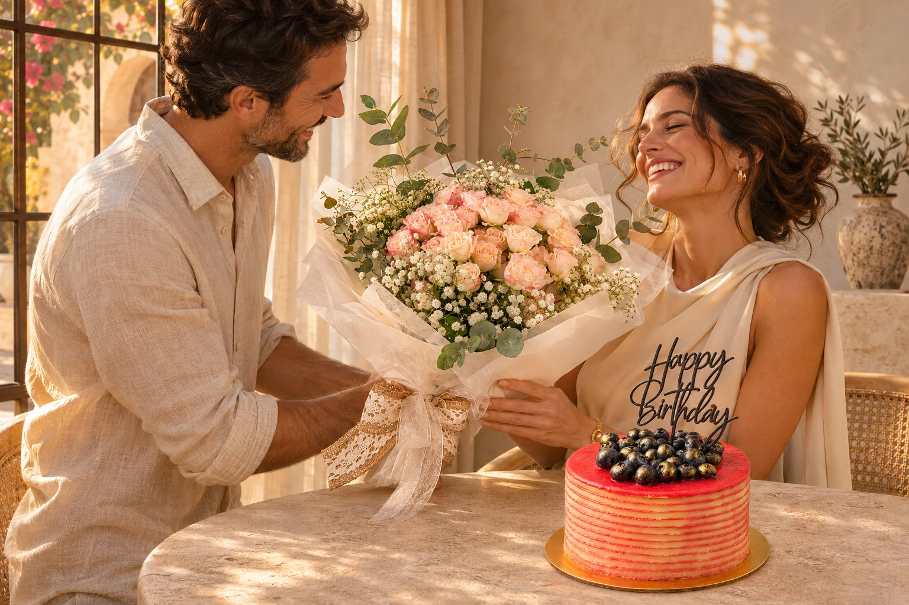
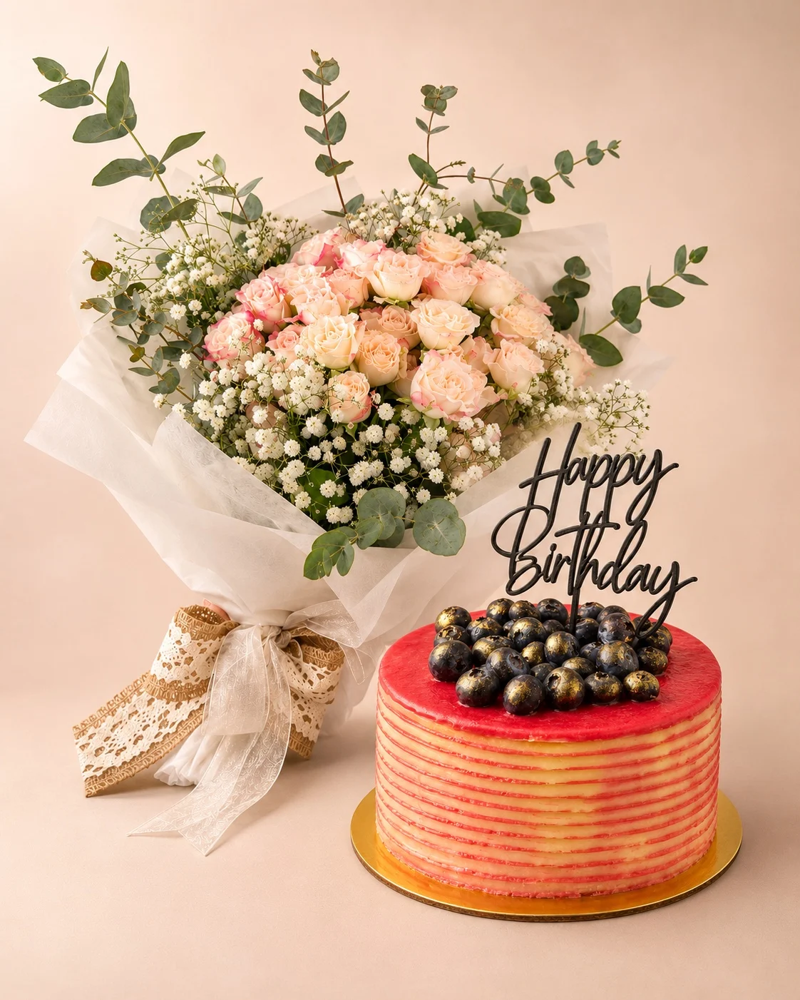

FLORES Y TARTA PARA REGALAR
Hay regalos.
Y hay momentos.
Un ramo que enamora. Una tarta para compartir.
Un detalle que dice: «pensé en ti».
Cumpleaños · San Valentín · Aniversarios

EL ARTE DE TENER UN DETALLE
Flores que emocionan.
Un sabor a celebración.
Elige nuestro conjunto de referencia o cuéntanos cómo imaginas el tuyo.

DOS DETALLES. UN GRAN REGALO.
Tarta + ramo
de rosas.
Rosas en tonos champán, eucalipto y un lazo delicado. Una tarta en tonos coral, con arándanos y detalles dorados. Dos protagonistas para una misma sorpresa.
Pago único
Consulta con Noelia tamaño, raciones, ingredientes, fecha y forma de entrega. Las variaciones del conjunto y la entrega a domicilio se presupuestan antes de pagar.
EXPRESSDiscoverDiners ClubJCBUnionPayApple PayLinkamazon payKlarna.
Pago seguro con Stripe. Los métodos disponibles se muestran según tu país, dispositivo y compra.
CADA HISTORIA TIENE SU FECHA
Siempre hay algo
que merece celebrarse.
HECHO A TU MEDIDA · TAILOR MADE
Tu idea.
Nuestro punto de partida.
Una paleta de colores. Un nombre. Una dedicatoria. Una celebración que no se parece a ninguna otra.
Cuéntanos lo que tienes en mente. Noelia revisará contigo los detalles y, si cambias el conjunto, te confirmará una propuesta y su precio.
Cuéntanos tu idea →ANTES DE LA SORPRESA
Los detalles,
bien claros.
¿Qué incluye el regalo de 120 €?
El conjunto de referencia incluye la tarta y el ramo de rosas que aparecen en las tres fotografías del producto. Consulta con Noelia el tamaño, las raciones, los ingredientes y la disponibilidad para la fecha que deseas. Las modificaciones y la entrega a domicilio se presupuestan por separado.
¿Puedo encargar un regalo de cumpleaños o San Valentín?
Sí. Selecciona cumpleaños, San Valentín o Día de los Enamorados en el formulario. También puedes elegir aniversario, bautismo, primera comunión, boda, nacimiento, Día de la Madre, agradecimiento u otra ocasión.
¿Podéis preparar algo a medida para un bautismo o una comunión?
Cuéntanos en observaciones tus colores, decoración, cantidad de personas y cualquier idea que quieras incorporar. Selecciona «Encargo a medida» y envía la ficha por WhatsApp. Noelia confirmará las posibilidades y el presupuesto antes del pago.
¿Cómo llega mi formulario a Noelia?
El botón de WhatsApp transforma los campos en un mensaje ordenado con tu regalo, ocasión, fecha y observaciones. Se abre el chat de Noelia: solo queda revisar y pulsar Enviar. No se envía automáticamente ni se adjunta una hoja de cálculo.
¿Cómo pago y qué medios se aceptan?
El conjunto de referencia se paga por Stripe, después de acordar los detalles con Noelia. Puedes usar tarjetas Visa, Mastercard y American Express, además de los métodos compatibles habilitados como Apple Pay, Link, Amazon Pay o Klarna. Las opciones definitivas aparecen en la pantalla de pago.
¿Puedo consultar ingredientes y alérgenos?
Sí. Marca la opción de consulta alimentaria antes de comprar y habla con Noelia para conocer ingredientes, alérgenos y posibilidades de adaptación. El formulario pasará a solicitud de presupuesto, sin iniciar el pago.
¿Puedo elegir la fecha y pedir entrega a domicilio?
Indica tu fecha preferida y la forma de entrega. Noelia confirmará la disponibilidad, el lugar y, cuando corresponda, el coste de entrega antes de pagar.
NO HACE FALTA UNA GRAN EXCUSA